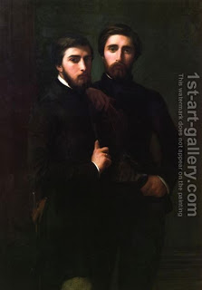

Bava Metzia 17 - One is not Believed About his Debt
If a creditor tells to his debtor, "You owe me a maneh (100 zuz, $5000), and the debtor says, "I owe you nothing because I never borrowed," and witnesses testify against the debtor that he did borrow, and subsequently the debtor said, "I paid this debt" - he is presumed a liar in reference to that money, and without providing witnesses he is not believed that he repaid.
A monetary obligation imposed by the court, such as Ketubah, has the strength of a document, and without witnesses one is not believed to claim that he repaid it.
Test your knowledge of the daf